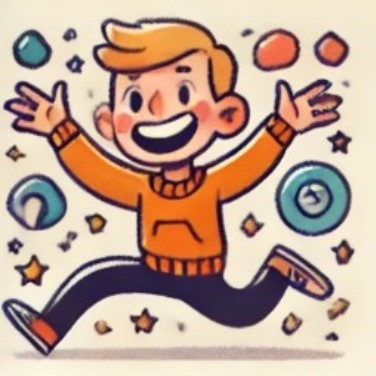

產生能量的方式

Extraversion外向型
「先行動，再思考」
外向型的人從外界互動中獲得能量，喜歡分享想法並積極參與。
Introversion內向型
「先觀察，再行動」
內向型的人從內心世界汲取能量，喜歡深思熟慮和個人空間。
思維模式
Sensing實感型
「先注意細節，再構建全貌」
實感型的人偏重於眼前的具體事實和可感知的細節，實事求是。
iNtuition直覺型
「先捕捉概念，再關注細節」
直覺型的人傾向於關注全局、抽象概念和可能性，善於聯想和預測未來。
做決策的依據
Thinking理性型
「先衡量對錯，再考慮感受」
理性型的人偏重邏輯和客觀標準，注重事情的公平性與合理性。
Feeling感性型
「先顧及感受，再衡量對錯」
感性型的人傾向以價值觀和人際關係為導向，注重和諧與關懷。
生活的反應態度

Judging系統型
「先計劃好，再開始做」
系統型的人喜歡掌控和結構化，偏好有條不紊的安排和明確的目標。
Perceiving彈性型
「先開展做，再隨機應變」
彈性型的人適應性強，偏好靈活的行動方式，樂於探索多種可能性。